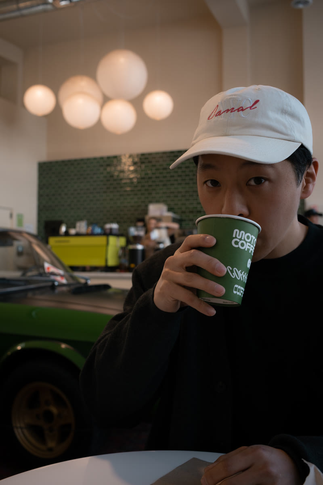
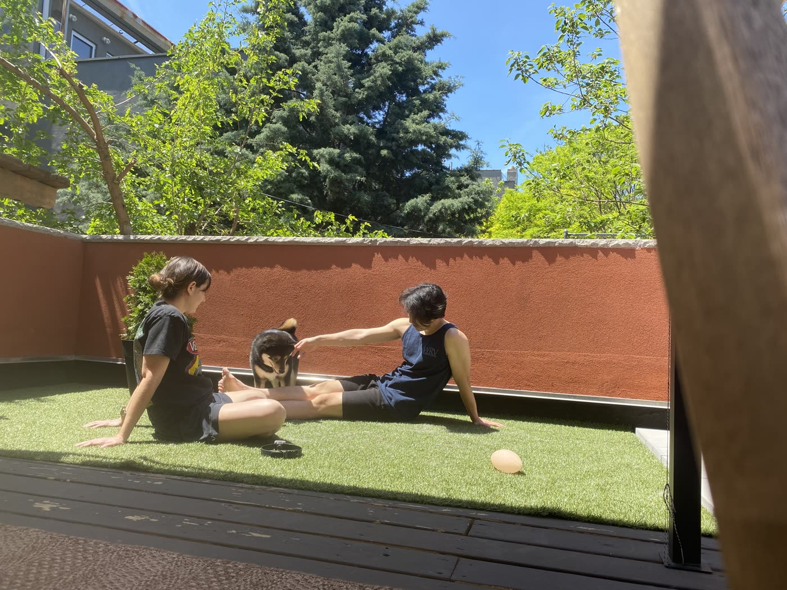
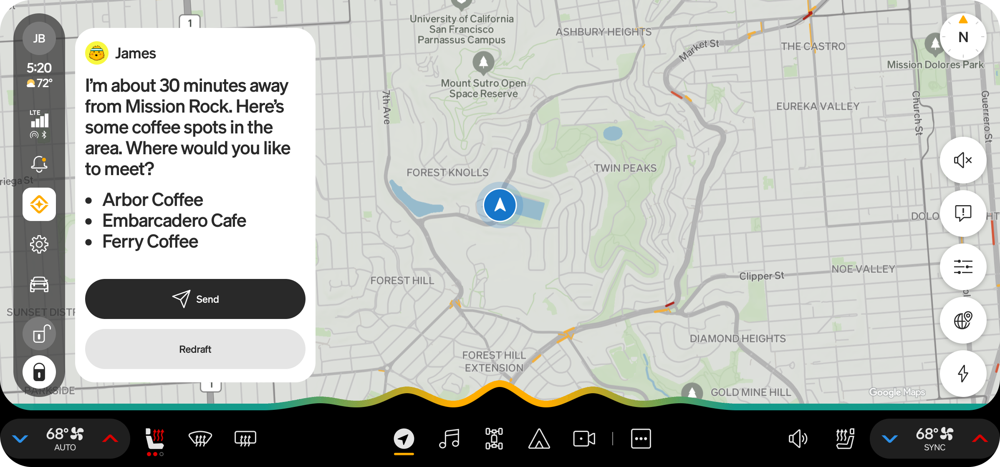
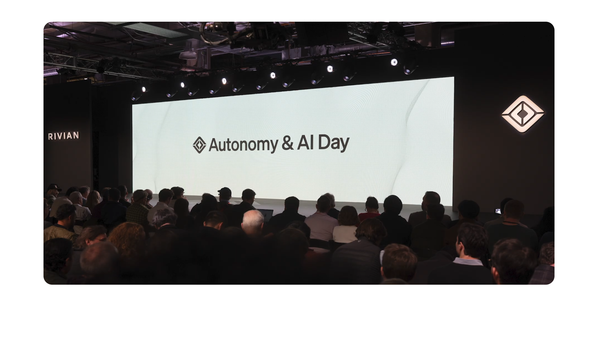
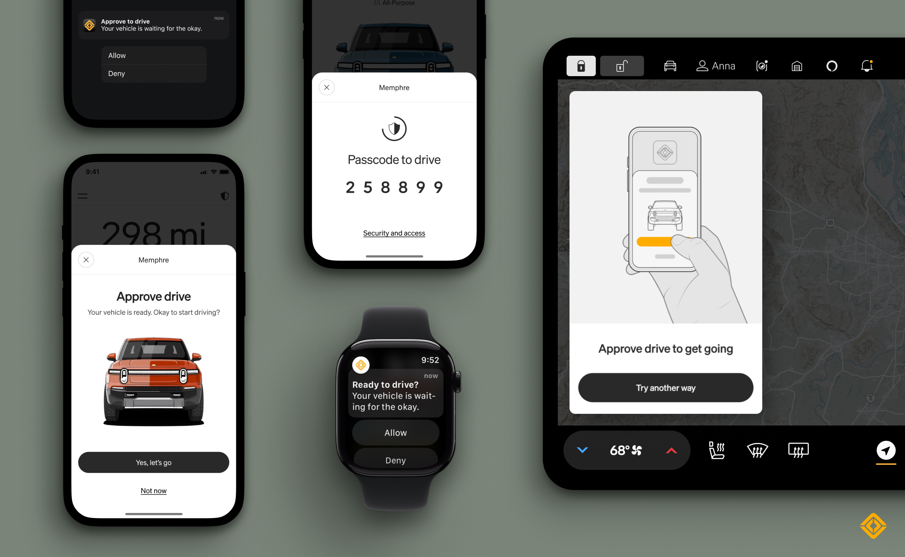

Product Designer at Rivian, drawn to simple interfaces, intelligent systems, and turning ambiguity into a clear direction.
I joined Rivian before a single vehicle had shipped. Since then, I've led design across vehicle features, mobile app, charging network, and most recently Rivian Assistant (AI).


Vehicle features designed for daily life inside a Rivian.
Products shipped between 2022–2026 reflecting end-to-end design ownership across vehicle systems and apps.
Rear Display
Meaningful control for rear-seat passengers.
Passengers can control media, view trip details, and manage climate from the rear display.
The rear display was largely underutilized, limited to seat warmers and basic view-only climate indicators. Expanding its role added value for passengers while preserving the driver's sense of control.
Camping App
Transform your vehicle into a campsite.
An in-vehicle app that manages climate, lighting, battery usage, and power access for multi-day outdoor stays or something as simple as a backyard movie night.
Camping is one of the clearest expressions of what makes Rivian different. Elevating it from a hidden toggle to a dedicated experience strengthened brand recognition and helped owners trust the vehicle in non-traditional use cases.
Climate Schedule
A vehicle that adapts to your schedule.
Drivers can schedule cabin climate ahead of commutes or trips so the vehicle is ready before they get in.
Preconditioning improves comfort, efficiency, and battery health, but those benefits aren't obvious to most drivers. Designing around routine made the feature feel useful without requiring technical understanding.

Biome Lighting
Personalize the cabin with ambient lighting.
Drivers can choose from a set of interior lighting presets to match their mood or personal taste.
Ambient lighting can easily feel decorative or distracting. A restrained system keeps the interior cohesive and reinforces Rivian's design language.
Pet Comfort
Peace of mind for pets and people.
A safety feature that maintains safe cabin conditions when the owner steps away.
The challenge was communicating safety and trust to owners while also reassuring passersby. A small moment of delight helps prevent confusion or concern when someone looks inside.
Small design decisions in each of these features shape how customers experience Rivian.
Rivian leads the industry in customer satisfaction according to Consumer Reports, reflecting how these features connect with real drivers.
An assistant designed to stay out of the way.
Rivian Assistant brings together your vehicle, the world around you, and your own apps and habits, combining all of it to understand your intent, and to do things that simply weren't possible while driving.
Show UI only when there's an action item.
An address the driver can navigate to. A contact they can call or message. An owner's guide entry they can open. These warrant a screen. A list of nearby cafes doesn't — Maps handles that without adding another layer.
Transcripts, muting controls, audio chimes on every state: all removed. The result is an assistant that feels confident rather than anxious. Less on screen, more trust in the system.
Feedback you can read without looking.
Expressive wave provides visual feedback through a uniquely Rivian personality.

The assistant knows when to offer, not just when to respond.

Passengers can control media, view trip details, and manage climate from the rear display.
See the highlights from Rivian Autonomy & AI dayDesigning Rivian Assistant was mostly an exercise in restraint.
Stay in touch, hands-free
Send a message and share your ETA without ever reaching for your phone.
Add a layer of security to protect personal information and prevent vehicle theft.
A release that pushes the approach to vehicle security.

End to end experiences from chargers to scheduling to help save on utility bills
Spanning DC fast charging, home energy management, and smart scheduling across vehicle and mobile.
Work from before Rivian — eyewear, apps, and everything in between.
A collection of earlier work spanning product, industrial, and interaction design.
Eyewear Design
Frames designed for Nike, Google, and VSP.
Optical and sun frames spanning sport performance, fashion, and prescription — designed for major brands and developed through the full product lifecycle from concept to tooling.
Industrial design training shaped an instinct for physical constraints: how something fits, how it fails, and what it means to design for mass production.

App & Web
Earlier digital product work.
Consumer and enterprise apps across mobile and web — ranging from early-stage startups to larger product teams.
These projects built the foundation for systems thinking and end-to-end ownership that carries into the work at Rivian.

Identity & Visual
Brand and visual systems work.
Logos, type systems, and brand guidelines for small businesses and independent projects.
A visual sensibility developed here continues to inform how the digital products look and feel today.